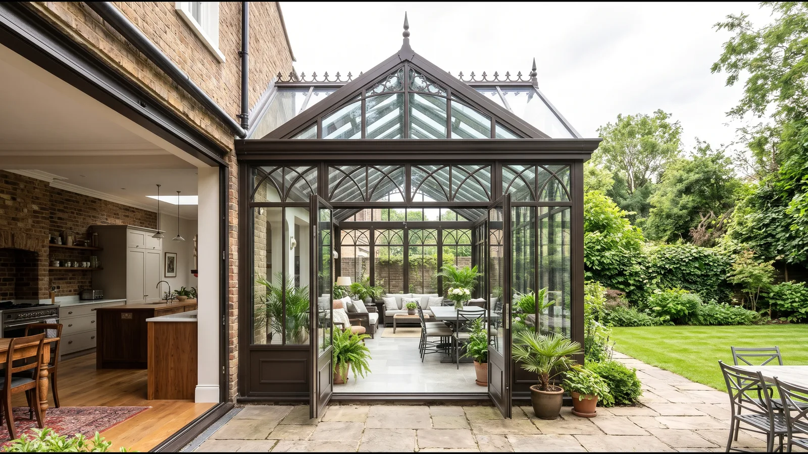
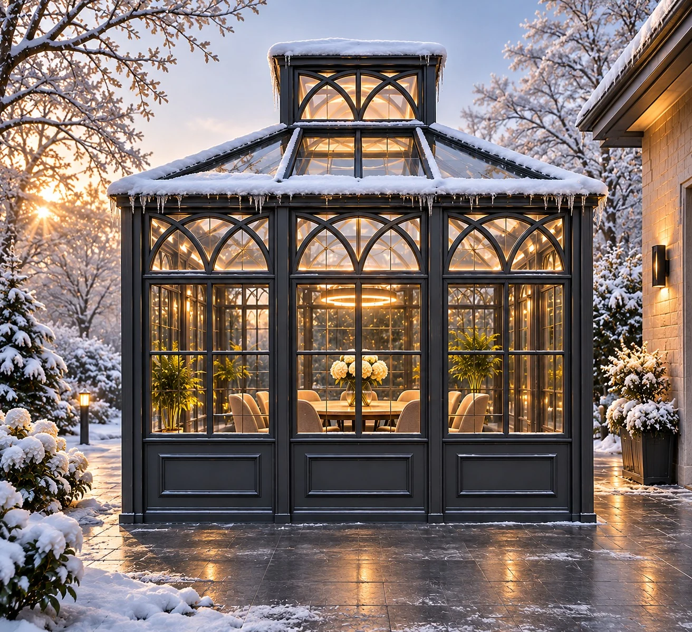
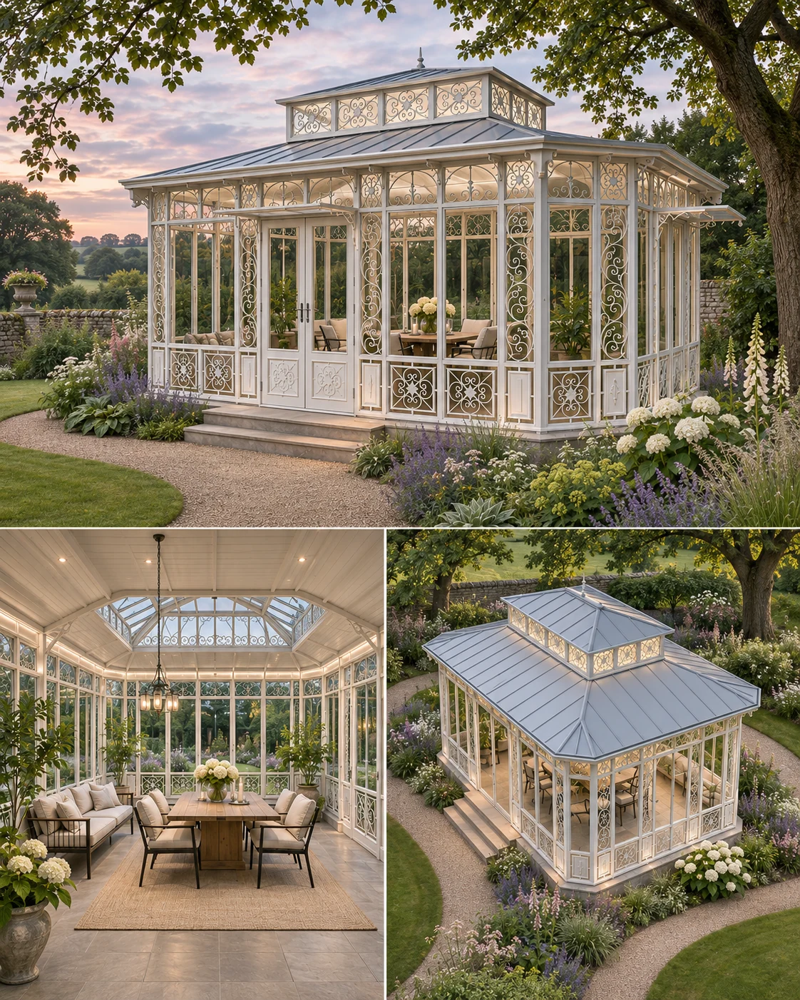
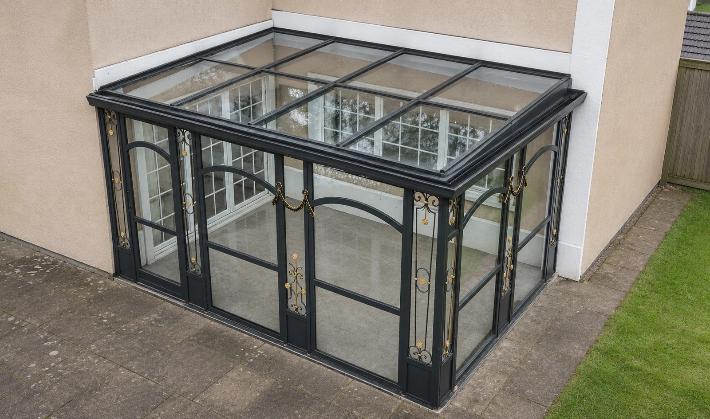
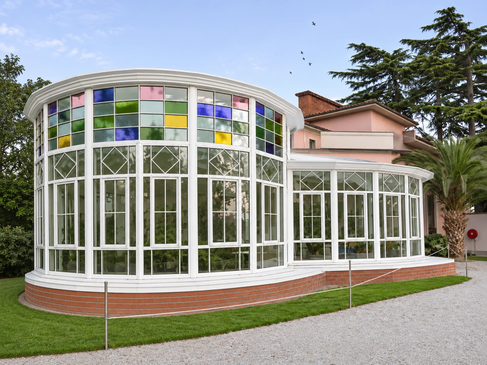

Proportion first
The height of the parapet, the width of the piers and the size of the lantern should follow the windows, floor levels and brickwork of the house, so the orangery reads as part of it.

Orangeries · Design and build
Design visualisation
Marla Garden · London
An orangery sits between an extension and a conservatory: solid corners or piers, tall glazed walls, a flat perimeter roof and a glazed lantern bringing light into the middle of the room. We design bespoke orangeries for London houses and build them in steel or timber, matched to the brickwork, proportions and character of the existing home.
Most orangery projects start with a simple question: how should the new room feel from inside the house? A kitchen opening onto the garden, a dining room under a lantern or a quiet sitting room all lead to different proportions. We start there, then settle the footprint, the balance of solid and glass, the lantern and the material.
The height of the parapet, the width of the piers and the size of the lantern should follow the windows, floor levels and brickwork of the house, so the orangery reads as part of it.
A raised glazed lantern brings daylight deep into the room. Its pitch, size and ridge detail set much of the character of the finished orangery.
Timber suits a traditional joinery look; steel allows slimmer frames, curves and ornamental detail. The choice is made for the house, not by default.
Foundations, brick piers, the glazed structure, roof, heating and finishes involve several trades. We agree who does what at the start, so the responsibilities are clear.
Orangeries began in the seventeenth and eighteenth centuries as garden buildings for overwintering citrus trees: masonry rooms with tall windows facing the sun. Today the word describes a domestic room with the same balance of solid and glazed, usually attached to the house and lit from above by a roof lantern.
In practice, a conservatory is mostly glass, roof and walls, while an orangery has more solid wall and a solid roof around its lantern. That makes an orangery easier to heat and furnish, and closer in feel to the rest of the house. If you want a fully glazed room instead, see our bespoke conservatories.
Painted timber is the traditional choice for a classic English orangery, with moulded glazing bars, panelled bases and a timber lantern. It suits Georgian and Victorian houses and can be detailed to match existing sash windows. Timber orangeries need wider sections than steel and regular redecoration, and the joinery specification should be agreed carefully for exposure and durability.
For timber projects, we develop the design and drawings and coordinate the work with specialist joinery and building partners, so you deal with one point of contact from the first sketch to completion.
Steel carries the same glass with much slimmer frames, can be rolled into arches and curved bays, and can take ornamental detail such as cresting and scrolled brackets. Our steel structures are hot-dip galvanised and painted. See steel orangeries for how they are made, and our comparison of steel, timber and uPVC for the trade-offs.
We begin with photographs, approximate dimensions and how you want to use the room, then visit to review the house, access and ground. Design drawings and visualisations follow, so that the proportions, lantern and materials can be agreed before anything is ordered.
Once the design is fixed, foundations and masonry, the glazed structure, roof and finishes are scheduled together. Planning permission or building regulations approval, where needed, are dealt with before work starts on site.
Many orangeries can be built under permitted development, but conservation areas, listed buildings and larger extensions need planning permission. Because an orangery has more solid roof and wall than a conservatory, it is also more likely to need building regulations approval. Read our guides to planning in London conservation areas, building regulations for glass extensions and what a bespoke conservatory costs in London.
Explore the collection
Compare roof forms, glazing patterns and the relationship to the garden. Open a design to explore its details and reference views.
 Curved Conservatories
Curved ConservatoriesDesign collection
A pale glazed extension with rounded bays and closely spaced vertical glazing. The design board brings the entrance and curved architectural details together.
Explore the design
Garden GlasshousesDesign collection
A compact dark garden room with arched glazing and a raised roof lantern in a winter setting.
Explore the design Glazed Garden Rooms
Glazed Garden RoomsDesign collection
A pale glazed room adjoins a house, with decorative window divisions and a garden path along the elevation. The attached setting changes how the structure meets the existing architecture.
Explore the design Classical Garden Pavilions
Classical Garden PavilionsDesign collection
A dark garden room combines a glazed roof with decorative arched panels. A defined entrance sits within a planted approach, with light visible inside.
Explore the design
Classical Garden PavilionsDesign collection
A multi-view study of a pale glazed pavilion, with an ornamental entrance, roof details and a garden-facing interior. Warm light changes how the frame is read in the evening.
Explore the design
Glazed Garden RoomsDesign collection
A compact house-side extension with a glazed roof and dark framing.
Explore the designLook closer

ClassicWhite framing, coloured glass accents and a rounded glazed bay set against a pale pink house.
Explore project Classic
ClassicCompletion study
Two domed glazed bays flank a tall central entrance with slender ornamental steelwork.
Explore project Classic
ClassicA green conservatory with a central glazed gable, fan-shaped glazing details and garden-facing double doors.
Explore projectDevelop your project
Compare garden structure designs and bring your preferred references to the design discussion.
Our conservatory cost guide explains the decisions that shape a quotation.
Read the London conservatory planning guide for the questions to check for your site.
Share the setting and your preferred direction to discuss your garden project.
Planning your space
An orangery has more solid wall and a solid perimeter roof around a central glazed lantern, while a conservatory is mostly glass. An orangery usually feels more like part of the house and is easier to heat.
Yes. Steel orangeries are made by our metalwork partner. Timber orangeries are designed by us and built with specialist joinery and building partners, with one agreed scope and a single point of contact.
Many can be built under permitted development, but conservation areas, listed buildings and larger extensions need permission. Orangeries are also more likely than conservatories to need building regulations approval.
Yes. Piers and walls are built on site in brick or render to match the house, and the glazed structure and lantern are designed to sit on them.
Send a few photographs of the house and garden, approximate dimensions and how you want to use the room. We will discuss the direction and next steps.
Your next space
Share the setting, the way you want to use the space and the designs you are drawn to.
Plan your project